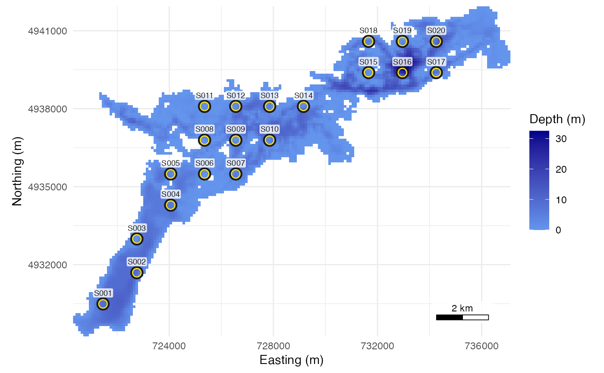

Place receivers on the water cells of a raster
place_receivers.RdPlaces a candidate receiver array on a depth raster in which NA cells are land. Three methods:
Usage
place_receivers(
grid,
n = NULL,
spacing = NULL,
method = c("grid", "random", "manual"),
coords = NULL,
seed = NULL
)Source
The example raster stoney_depth.tif in
system.file("extdata", package = "arraydesign") has the same grid and
depths as depth_raster of positionR 1.7.0, a 100 m depth raster
of Stoney Lake, derived from the bathymetry made before 2024,
with the CRS set to EPSG:32617. Depth is zero or negative metres and land
is NA; 56 of its 4,818 water cells hold 0.
Arguments
- grid
A terra::SpatRaster of water depth in metres, with NA on land, in a projected CRS whose unit is the metre. A raster in longitude and latitude or in another unit, such as feet, is refused. The scale of the CRS is measured at the raster centre on its two axes and its diagonals. A CRS is refused when any of the four is more than 1 percent from 1, as in Web Mercator (EPSG:3857) away from the equator, whose metres are not metres on the ground. The message names the scale and the UTM zone of the centre. A CRS whose scale cannot be measured, such as a local engineering CRS, is refused too. Depth may be stored as positive or as negative numbers;
deploy_zis returned positive down.- n
Number of receivers, for
"grid"and"random".- spacing
Distance between receivers in metres, at least the cell size. For
"grid", the lattice spacing, used whennisNULL. For"random", the smallest allowed distance between two receivers.- method
One string:
"grid"(the default),"random"or"manual".- coords
For
"manual", a data frame with columnsxandyin the CRS ofgrid, ordeploy_lonanddeploy_latin WGS 84. Columnsreceiver_serialandstation_id, when present, are kept.- seed
Seed for
"random"and for the tie-breaks of"grid";NULLuses the current random number stream. The caller's stream is restored after a seeded call. The draws depend on the generator kind as well as the seed; the kind is stored with the result.
Value
A data frame of class receiver_layout, one row per receiver, with
the columns of the positionR table contract: receiver_serial ("R001",
"R002", ...), station_id ("S001", ...), x and y in the CRS of
grid, deploy_lat and deploy_lon in WGS 84, and deploy_z, the
depth of the cell in metres. Attributes: epsg, the EPSG code of grid
(NA when terra cannot name one), method, spacing (the lattice spacing
used, for "grid"), trimmed (surplus lattice nodes dropped, for
"grid" with n), snapped (points moved off land, for "manual")
and rng_kind (the RNGkind() in force).
Details
"grid": a square lattice. Withspacing, the lattice is centred on the water and every node on a water cell becomes a receiver. Withn, the spacing and the lattice offset are searched until exactlynnodes fall on water; spacings below the cell size are not tried. If no lattice gives exactlyn, the nearest lattice with more nodes is taken and the surplus nodes with the fewest water neighbours, which are the nodes nearest the shore, are dropped."random":nwater cells drawn at random. Withspacingas well, no two receivers are closer thanspacing, and the function stops ifnsuch receivers do not fit."manual": the points incoords. A point on a land cell moves to the centre of the nearest water cell when the edge of that cell is within one cell diagonal, the ruledetfield::water_distances()applies, so both packages take or refuse the same points. It covers points that rasterisation of the shoreline put on land. A point farther from water, or outside the raster, is refused with an error that names it, or the first 10 and the count. Points outside the raster are refused first, so on an input that has both kinds the error names only those; the points on land are named once every point is on the raster. Two receivers in one cell share every cell-based detection probability, so the function warns when that happens, naming the rows, or the first 10 and the count; repeatedreceiver_serialvalues are refused.
The "grid" and "random" methods return exactly n receivers when n
is given. They place each receiver at the centre of its cell, so
coordinates written to a file and read back with "manual" fall in the
same cells.
Every water cell is a candidate, however shallow. To keep receivers out of
water too shallow to deploy in, set those cells to NA first, for example
place_receivers(terra::ifel(grid < 1, NA, grid), n = 48) keeps receivers
in 1 m of water or more when depth is stored as positive metres.
Examples
# Stoney Lake, Ontario: 100 m cells, depth zero or negative metres, land NA.
stoney <- terra::rast(system.file("extdata", "stoney_depth.tif",
package = "arraydesign"))
# The 20 planned stations of vignette("arraydesign"), as latitude and longitude.
planned <- read.csv(system.file("extdata", "planned_stations.csv",
package = "arraydesign"))
rx <- place_receivers(stoney, method = "manual", coords = planned)
nrow(rx)
#> [1] 20
head(rx)
#> receiver_serial station_id x y deploy_lat deploy_lon deploy_z
#> 1 R001 S001 721454 4930491 44.49377 -78.21465 8.931593
#> 2 R002 S002 722754 4931691 44.50416 -78.19781 9.132986
#> 3 R003 S003 722754 4932991 44.51585 -78.19724 1.285483
#> 4 R004 S004 724054 4934291 44.52714 -78.18034 6.573844
#> 5 R005 S005 724054 4935491 44.53793 -78.17982 2.934919
#> 6 R006 S006 725354 4935491 44.53752 -78.16348 1.003954
plot(rx, stoney)

# No receiver can be moored in water under 1 m, so drop it before a grid or
# random layout. The grid of 20 is the planned array.
deployable <- terra::ifel(abs(stoney) < 1, NA, stoney)
place_receivers(deployable, n = 20, method = "grid", seed = 1)
#> receiver_serial station_id x y deploy_lat deploy_lon
#> 1 R001 S001 721454 4930491 44.49377 -78.21465
#> 2 R002 S002 722754 4931691 44.50416 -78.19781
#> 3 R003 S003 722754 4932991 44.51585 -78.19724
#> 4 R004 S004 724054 4934291 44.52714 -78.18034
#> 5 R005 S005 724054 4935491 44.53793 -78.17982
#> 6 R006 S006 725354 4935491 44.53752 -78.16348
#> 7 R007 S007 726554 4935491 44.53715 -78.14839
#> 8 R008 S008 725354 4936791 44.54921 -78.16291
#> 9 R009 S009 726554 4936791 44.54884 -78.14782
#> 10 R010 S010 727854 4936791 44.54843 -78.13148
#> 11 R011 S011 725354 4938091 44.56090 -78.16234
#> 12 R012 S012 726554 4938091 44.56053 -78.14725
#> 13 R013 S013 727854 4938091 44.56012 -78.13090
#> 14 R014 S014 729154 4938091 44.55970 -78.11455
#> 15 R015 S015 731654 4939391 44.57059 -78.08253
#> 16 R016 S016 732954 4939391 44.57017 -78.06618
#> 17 R017 S017 734254 4939391 44.56975 -78.04983
#> 18 R018 S018 731654 4940591 44.58138 -78.08199
#> 19 R019 S019 732954 4940591 44.58096 -78.06563
#> 20 R020 S020 734254 4940591 44.58054 -78.04928
#> deploy_z
#> 1 8.931593
#> 2 9.132986
#> 3 1.285483
#> 4 6.573844
#> 5 2.934919
#> 6 1.003954
#> 7 6.077718
#> 8 1.253353
#> 9 1.070835
#> 10 2.996955
#> 11 1.281162
#> 12 1.693598
#> 13 4.971099
#> 14 2.842099
#> 15 1.665668
#> 16 24.834967
#> 17 7.243891
#> 18 6.508528
#> 19 2.869662
#> 20 8.944633
place_receivers(deployable, n = 20, method = "random", spacing = 1000, seed = 1)
#> receiver_serial station_id x y deploy_lat deploy_lon
#> 1 R001 S001 729654 4938491 44.56314 -78.10809
#> 2 R002 S002 733154 4939491 44.57101 -78.06362
#> 3 R003 S003 726054 4935791 44.54000 -78.15455
#> 4 R004 S004 724154 4937391 44.55498 -78.17774
#> 5 R005 S005 731654 4939991 44.57599 -78.08226
#> 6 R006 S006 724554 4935191 44.53508 -78.17367
#> 7 R007 S007 736554 4940591 44.57979 -78.02035
#> 8 R008 S008 728654 4937991 44.55896 -78.12088
#> 9 R009 S009 726754 4937791 44.55777 -78.14487
#> 10 R010 S010 730354 4936591 44.54583 -78.10013
#> 11 R011 S011 725854 4936991 44.55086 -78.15654
#> 12 R012 S012 734854 4941291 44.58664 -78.04141
#> 13 R013 S013 722354 4938091 44.56183 -78.20007
#> 14 R014 S014 731354 4938891 44.56619 -78.08653
#> 15 R015 S015 728654 4936991 44.54997 -78.12133
#> 16 R016 S016 721554 4931391 44.50183 -78.21301
#> 17 R017 S017 722654 4931091 44.49880 -78.19932
#> 18 R018 S018 723454 4935791 44.54081 -78.18723
#> 19 R019 S019 724354 4933891 44.52345 -78.17675
#> 20 R020 S020 723154 4933691 44.52202 -78.19191
#> deploy_z
#> 1 4.268853
#> 2 30.926132
#> 3 2.482898
#> 4 2.387240
#> 5 2.016882
#> 6 6.249562
#> 7 1.314513
#> 8 7.632521
#> 9 8.478638
#> 10 1.787343
#> 11 1.292136
#> 12 6.086172
#> 13 1.866826
#> 14 13.741921
#> 15 8.121991
#> 16 3.688317
#> 17 5.098614
#> 18 1.778402
#> 19 4.275510
#> 20 7.039110
nrow(place_receivers(deployable, spacing = 2000))
#> [1] 9